Stories of WorldWide Telescope in Action
Research
Outreach
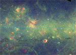
This is a story about how a group of Astronomers found a new way to uncover the structure of our Galaxy, using WWT, in the back of a conference room at a castle in Germany.
Milky Way Bones
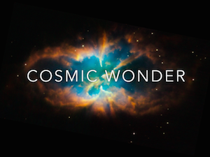
Using WWT enabled Adler to rapidly produce a full skyshow featuring real imagery rather than computer models, and to do so in a small fraction of the time and cost of a more typical fulldome skyshow production.
Cosmic Wonder
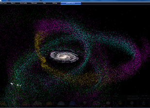
pyWWT:
See pyWWT in Action.
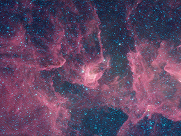
Glimpse360 in WWT:
Learn how the Spitzer data are displayed using WWT.
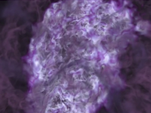
yt and WWT:
yt is a python package for analyzing and visualizing volumetric, multi-resolution data from astrophysical simulations, radio telescopes, and a burgeoning interdisciplinary community.
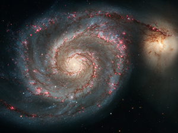
WWT on Giant Touchscreens:
Learn about how the office of public outreach at STScI are displaying WWT on giant touchscreens.
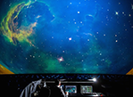
Adler After Dark
During the DIY Science themed Adler after Dark, participants created their own WWT Tours.
Fetch! :
Learn about an episode of PBS Fetch featuring WWT.
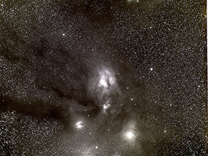
Putting Images Back in the Sky:
Learn how flickr, astrometry.net, and WWT are used to place images in context.
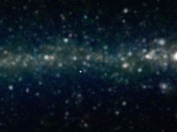
ADS All Sky Survey:
See the map of literature in the sky.
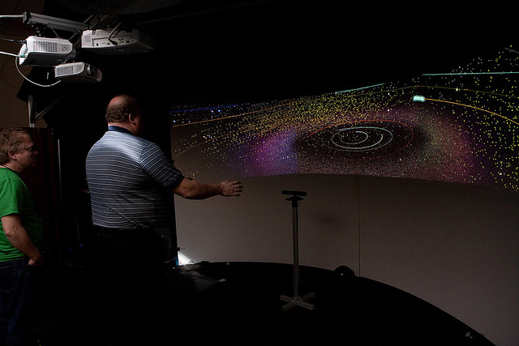
WWT Kinect:
Learn about using WWT with Kinect.
K12
University
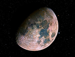
How can educators teach Astronomy concepts for deep understanding? To answer this question, WWTAmbassadors have worked closely with K-12 teachers.
WWTA Moon Phases
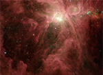
Students at Harvard's Graduate Level Interstellar Medium Class create interactive education modules using various online programs including WorldWide Telescope.
Grad Student Learning Modules
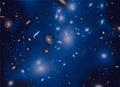
6th Grade Projects:
Here is a story of WWT Ambassadors joining forces with an innovative classroom teacher to update project-based-learning.
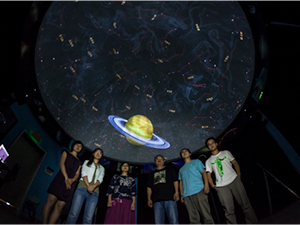
WWT in China:
Learn about how Chinese educators and planetariums are using WWT.
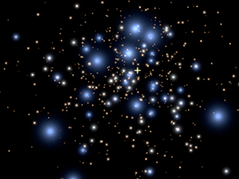
WWT and Star Clusters:
Learn about how WWT is being used to show star cluster simulations.
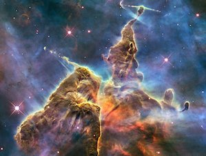
Labs in Astro 101:
Learn about WWT Astronomy labs at Bucknell.
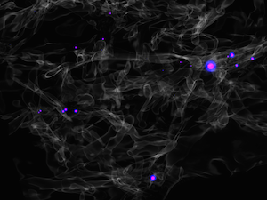
Astro 101 Mini-Tours:
Learn about how Stella Offner uses WWT for her Astronomy 101 course.
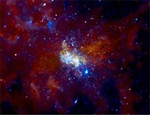
Columbia College Astro 101:
At Columbia College, an arts and media college in Chicago, undergraduate students were challenged to learn production skills along with WorldWide Telescope to explore Astronomy data sets.
WorldWide Telescope Website
•
WWT Ambassadors Website